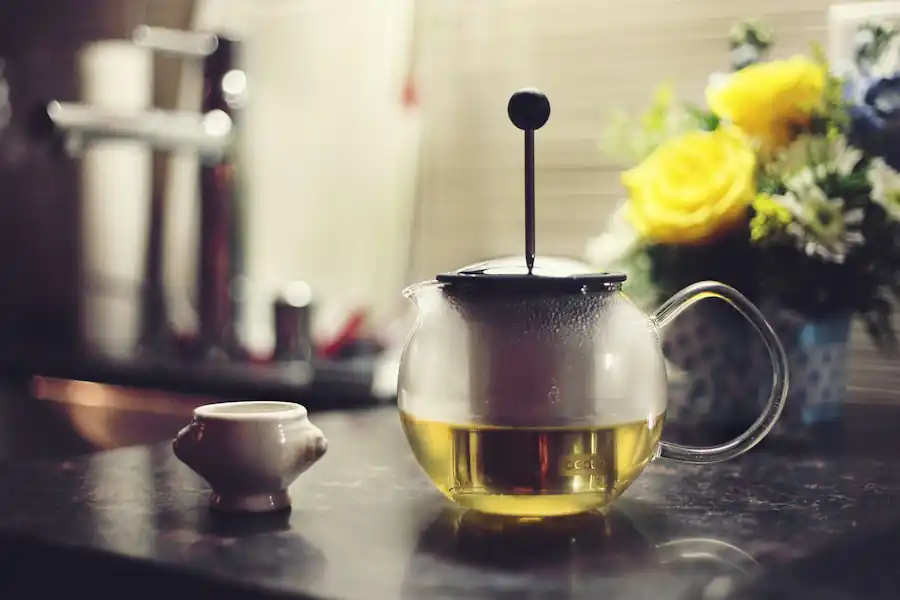
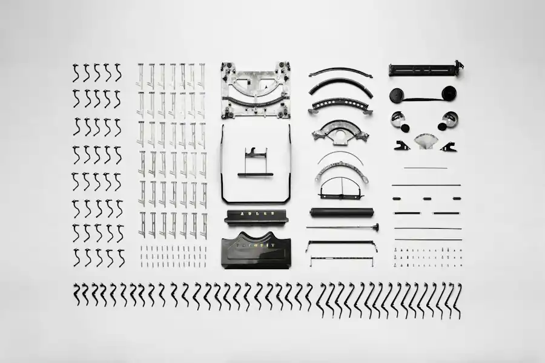

Ten years of Acme: what we got right
A long look back at a decade of building calm software.
Essays on product, engineering and design - one post a week, no hot takes.
A long look back at a decade of building calm software.
Editor's pick
No posts of this demo match.

Fewer badges, quieter colors, one primary action per screen.
Line height, contrast and the font size nobody argues about.

Two years of a four-day week, and what it did to the roadmap.